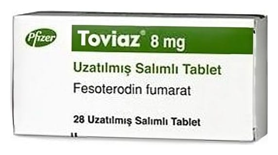

Toviaz 8 mg 28 Uzatılmış Salımlı Tablet

Ne için kullanılır
KT · Bölüm 1TOVIAZ®antimuskarinik olarak anılan aşırı aktif mesanenin hareketini azaltan ve belirtilerini tedavi eden, tıbbi bir üründür. 1 adet uzatılmış-salımlı tablet, 6,2 mg fesoterodine eşdeğer 8 mg fesoterodin fumarat içermektedir.
Her TOVIAZ®8 mg uzatılmış-salımlı tablet; mavi, oval, bikonveks, baskılı ve film-kaplı dır. 14, 28 ve 84 uzatılmış salımlı tablet içeren blisterler halinde ambalajlanmıştır.
TOVIAZ®aşırı aktif bir mesanenin şu tür belirtilerini tedavi eder: • Ani sıkışmayı takiben mesanenizi boşaltırken kontrol edememe (sıkışma inkontinansı denir) • Aniden mesanenizi boşaltma gereksinimi duyma (sıkışma denir) • Mesanenizi normalden daha sık boşaltmak zorunda kalma (idrar sıklığında artış denir)